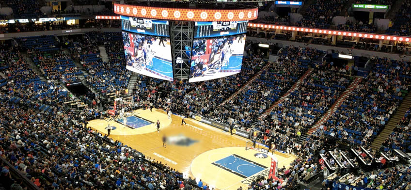

Minnesota Timberwolves - Fundado em 1989, o Minnesota Timberwolves passou por diversas fases, incluindo altos e baixos, mas se destacou como uma equipe com talento. Com jogadores notáveis como Kevin Garnett, a equipe tem sido um competidor constante na NBA. Nos últimos anos, com estrelas como Karl-Anthony Towns e Anthony Edwards, os Timberwolves buscam retornar às glórias da conferência Oeste e conquistar um título.
Elenco - Karl-Anthony Towns (#32), Anthony Edwards (#1), Rudy Gobert (#27), Mike Conley (#10), Jaden Ivey (#8), Naz Reid (#11), Kyle Anderson (#5), Troy Brown Jr. (#7), Nikhil Alexander-Walker (#6), Austin Rivers (#25).
Títulos NBA - 0
Títulos Conferência - 0
Estádio - Target Center (19.000)
